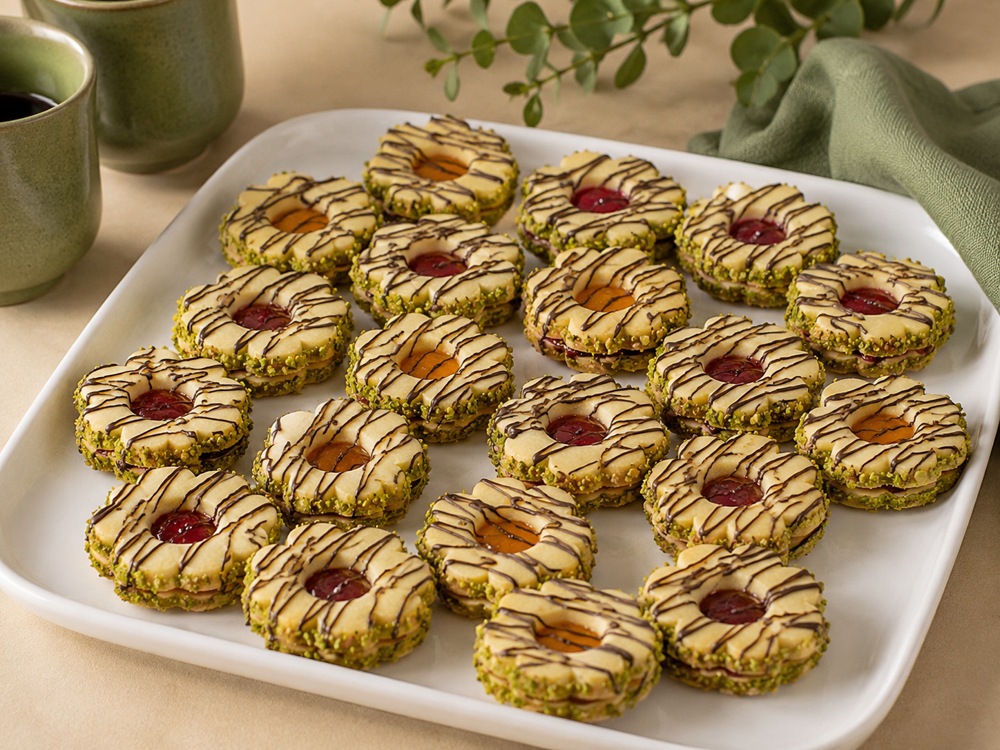

شیرینی مشهدی (مربایی)
طعم اصیل شیرینیهای خاطرهانگیز با BoBo
شیرینی مشهدی BoBo با بافتی لطیف، کرهای و پودری، تجربهای از شیرینیهای اصیل قنادی را به خانه میآورد. این شیرینیها بافتی نرم و ترد دارند که بهآرامی در دهان آب میشود و در کنار لایهای از مربا یا مارمالاد، طعمی متعادل و دلنشین ایجاد میکند. تنها با افزودن چند ماده ساده، میتوانید شیرینیهایی زیبا و خوشعطر برای پذیرایی، مناسبتها یا لحظههای شیرین کنار چای و قهوه آماده کنید.
وزن بسته: ۵۰۰ گرم
زمان آمادهسازی: حدود ۳۰ دقیقه
زمان پخت: ۱۰ تا ۱۲ دقیقه
دمای فر: ۱۷۰ درجه سانتیگراد
نوع قالب: قالب گرد یا طرح دار ۵ تا ۵٫۵ سانتیمتری
خروجی: ۶۰ تا ۷۰ عدد شیرینی دوتایی با وزن کلی حدود ۸۰۰ گرم
مواد لازم جهت اضافه کردن:
جهت ثبت سفارش به صفحات ما در پیامرسانهای اینستاگرام، تلگرام، بله یا ایتا مراجعه نمایید
زمان آمادهسازی: حدود ۳۰ دقیقه
زمان پخت: ۱۰ تا ۱۲ دقیقه
دمای فر: ۱۷۰ درجه سانتیگراد
نوع قالب: قالب گرد یا طرح دار ۵ تا ۵٫۵ سانتیمتری
خروجی: ۶۰ تا ۷۰ عدد شیرینی دوتایی با وزن کلی حدود ۸۰۰ گرم
مواد لازم جهت اضافه کردن:
- تخم مرغ
- کره
- عسل
- مارمالاد یا مربای صاف شده